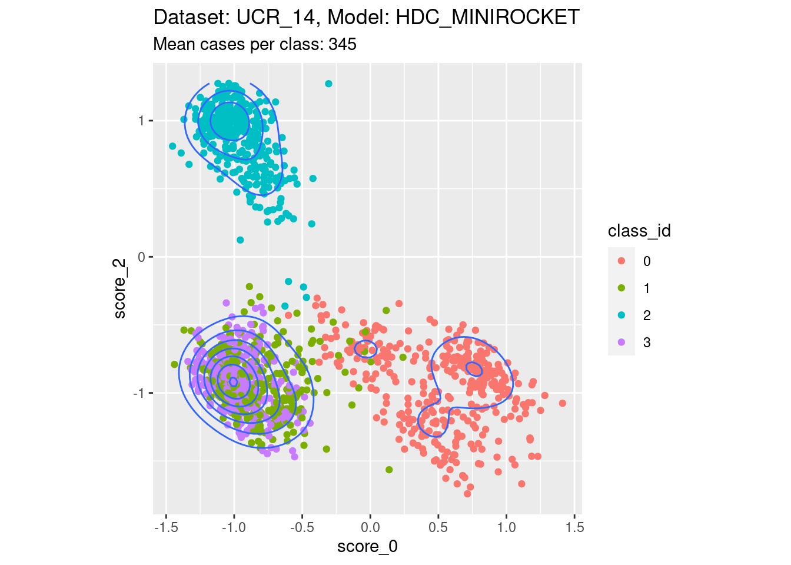
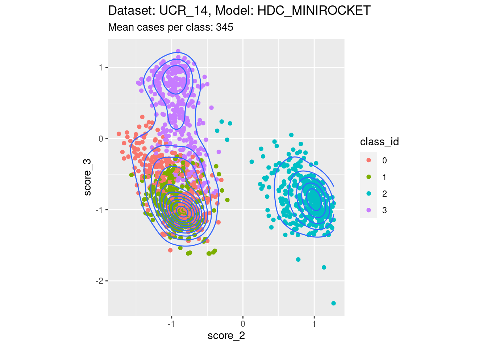
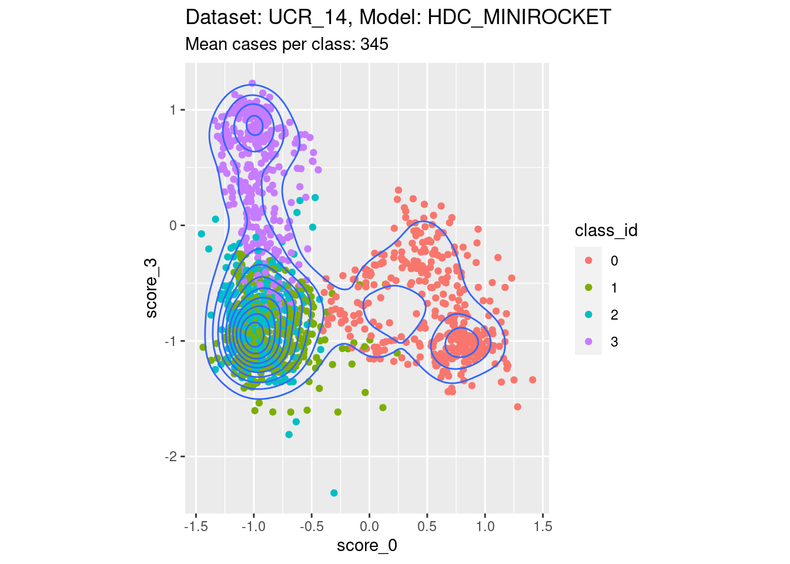
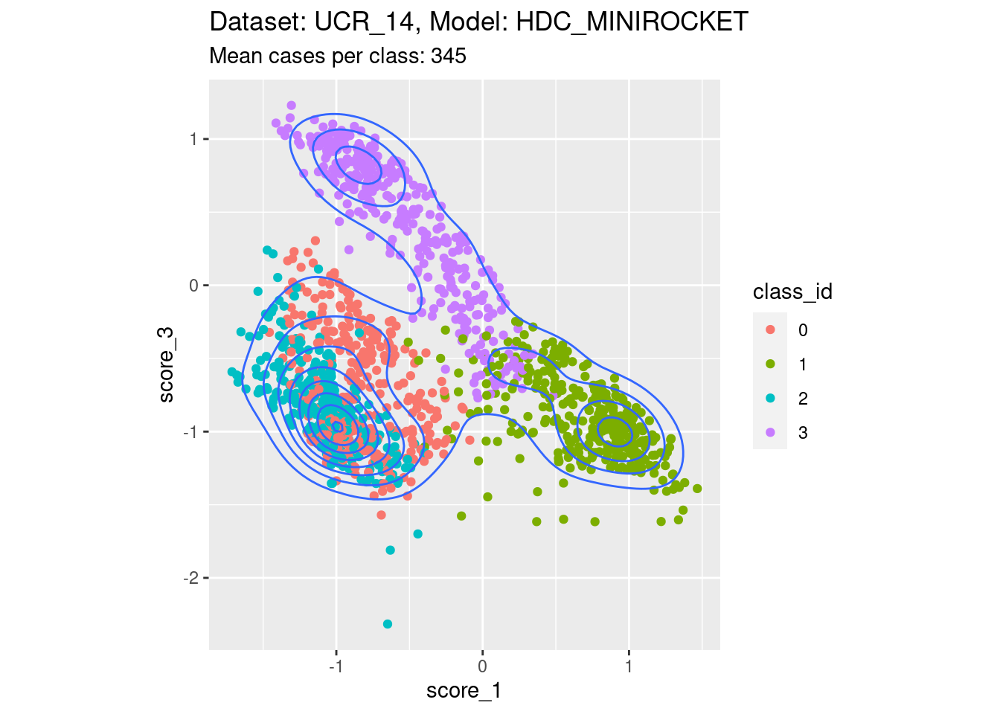
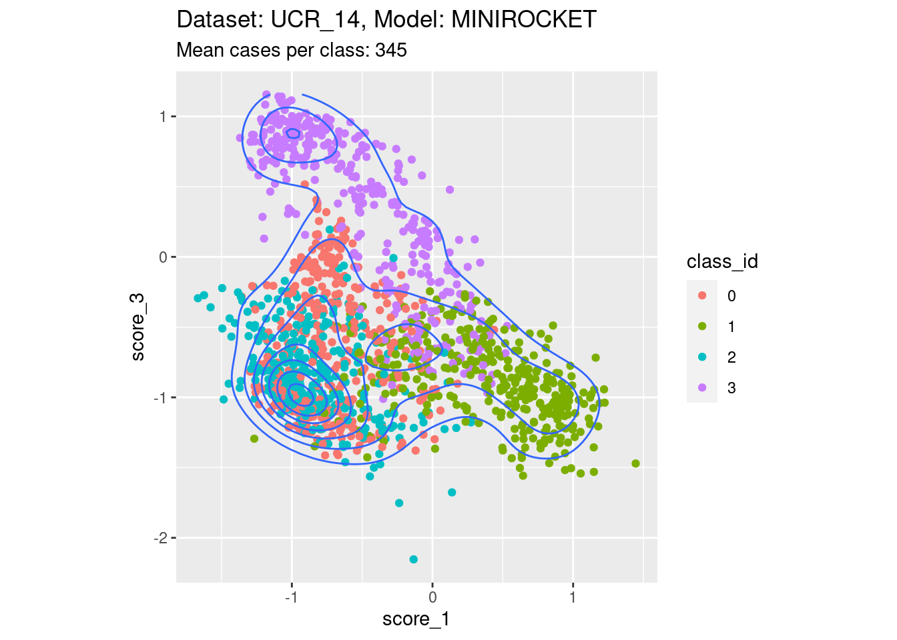
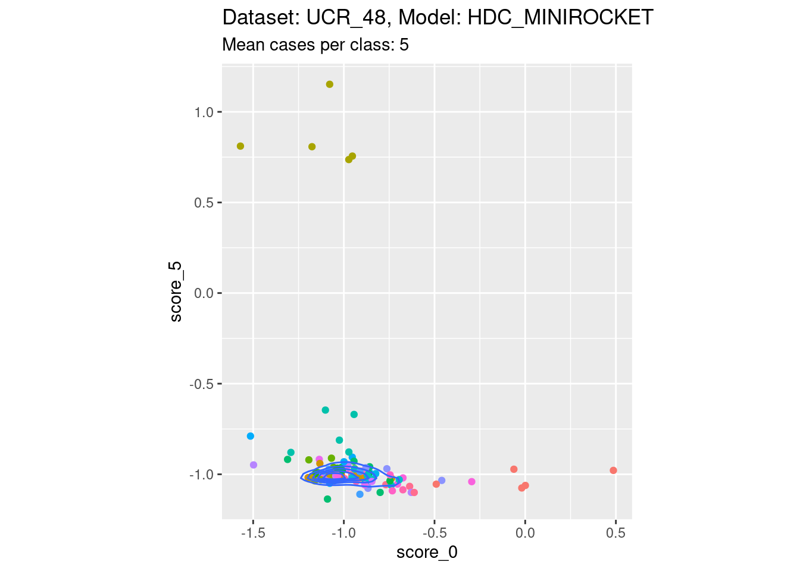
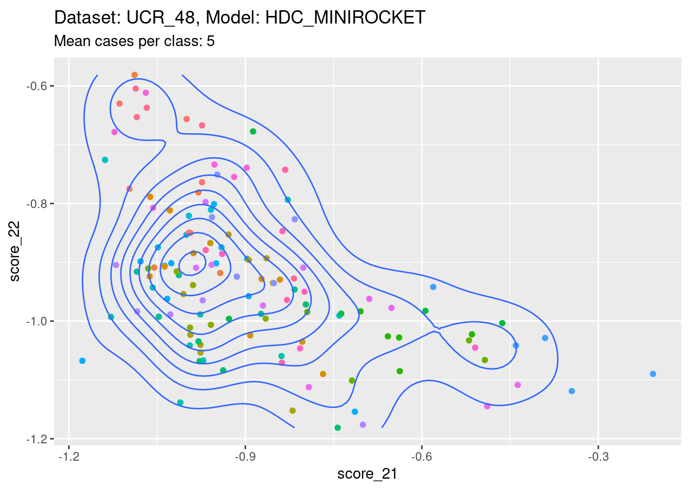
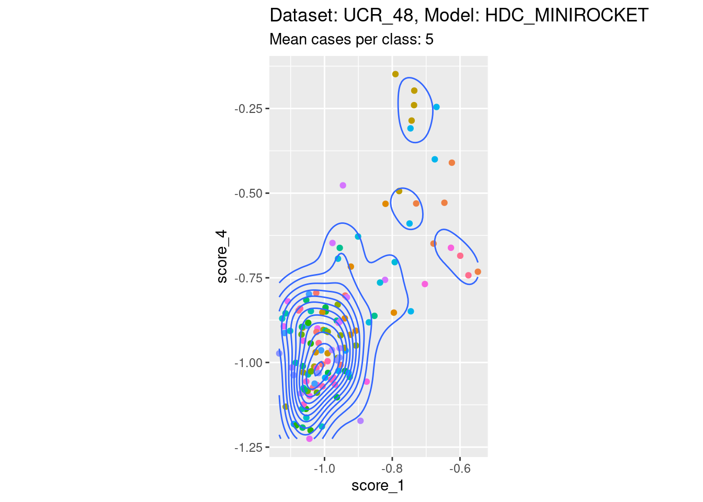

Last updated: 2023-01-26
Checks: 7 0
Knit directory: multiclass_AUC/
This reproducible R Markdown analysis was created with workflowr (version 1.7.0). The Checks tab describes the reproducibility checks that were applied when the results were created. The Past versions tab lists the development history.
Great! Since the R Markdown file has been committed to the Git repository, you know the exact version of the code that produced these results.
Great job! The global environment was empty. Objects defined in the global environment can affect the analysis in your R Markdown file in unknown ways. For reproduciblity it’s best to always run the code in an empty environment.
The command set.seed(20230112) was run prior to running
the code in the R Markdown file. Setting a seed ensures that any results
that rely on randomness, e.g. subsampling or permutations, are
reproducible.
Great job! Recording the operating system, R version, and package versions is critical for reproducibility.
Nice! There were no cached chunks for this analysis, so you can be confident that you successfully produced the results during this run.
Great job! Using relative paths to the files within your workflowr project makes it easier to run your code on other machines.
Great! You are using Git for version control. Tracking code development and connecting the code version to the results is critical for reproducibility.
The results in this page were generated with repository version d56514f. See the Past versions tab to see a history of the changes made to the R Markdown and HTML files.
Note that you need to be careful to ensure that all relevant files for
the analysis have been committed to Git prior to generating the results
(you can use wflow_publish or
wflow_git_commit). workflowr only checks the R Markdown
file, but you know if there are other scripts or data files that it
depends on. Below is the status of the Git repository when the results
were generated:
Ignored files:
Ignored: .Rhistory
Ignored: .Rproj.user/
Ignored: renv/library/
Ignored: renv/sandbox/
Ignored: renv/staging/
Note that any generated files, e.g. HTML, png, CSS, etc., are not included in this status report because it is ok for generated content to have uncommitted changes.
These are the previous versions of the repository in which changes were
made to the R Markdown (analysis/04_score_dependencies.Rmd)
and HTML (docs/04_score_dependencies.html) files. If you’ve
configured a remote Git repository (see ?wflow_git_remote),
click on the hyperlinks in the table below to view the files as they
were in that past version.
| File | Version | Author | Date | Message |
|---|---|---|---|---|
| Rmd | 8202503 | Ross Gayler | 2023-01-26 | Build site. |
Read the saved example data.
d_scores <- readRDS(file = here::here("output", "d_scores.RDS")) |>
# convert case, class_id and score_id to integer factors for safety & better label order
dplyr::mutate(
case = forcats::as_factor(case),
class_id = forcats::as_factor(class_id),
score_id = forcats::as_factor(score_id)
)The previous notebook pointed out that for each case, \(k\)-many scores are calculated. All these scores are calculated from the data of the same case, so there are potentially dependencies between the scores. In fact, we expect there to be dependencies because the models are trained so that the score corresponding to the input class is relatively high and all the other scores are relatively low.
The objective of this notebook is to investigate these expected dependencies between scores calculated from the same case.
We will investigate the dependency by plotting scatterplots, so we are limited to plotting only two of the \(k\) scores on any one plot. We will map one score to the \(x\) axis and the other to the \(y\) axis, so call them \(score_x\) and \(score_y\) respectively. For simplicity, consider the case of a perfectly discriminating system. Assume that each score has the value 1 when the input is from the target class and has the value 0 when the input is from any other class.
When the input is from \(class_x\), then \(score_x\) will be 1 and all the other scores, including \(score_y\) will be 0. This point will plot at position \((1,0)\). When the input is from \(class_y\), then \(score_y\) will be 1 and all the other scores, including \(score_x\) will be 0. This point will plot at position \((0,1)\). When the input is from some class other than \(class_x\) or \(class_y\), then both \(score_x\) \(score_y\) will be 0. This point will plot at position \((0,0)\). So the expected pattern is for points to be at the top-left, bottom-right, and bottom-left corners, respectively. We expect there to be no points at the top-right \((1,1)\) corner. Assuming the scores are performing reasonably but not perfectly we expect the points to generally fall below the \((0,1)\) to \((1,0)\) diagonal.
The following plots examine whether this pattern holds for a convenience sample of score pairs across data sets. The objective hear is to demonstrate the plausibility of the pattern rather than to perform diagnostics of the models, so the sample of pairs is not exhaustive.
Create a function to produce the desired plot.
Note that the scores in the sample datasets are not scaled into the range \([0,1]\). The plots are scaled to the actual ranges of the scores.
plot_score_pair_within_case <- function(
d, # data frame - superset of data to be plotted, compatible with d_scores
subset_d, # character[1] - name of dataset to plot
subset_m, # character[1] - name of model to plot
score_x, # integer[1] - identifier of score_id to plot on x axis
score_y, # integer[1] - identifier of score_id to plot on y axis
legend = TRUE # logical[1] - whether to display the class_id legend
# value - ggplot plot object
) {
d <- d |>
dplyr::filter(dataset == subset_d & model == subset_m) |>
tidyr::pivot_wider(
id_cols = c(dataset, model, case, class_id),
names_from = score_id,
values_from = score_val,
names_prefix = "score_"
)
# calculate mean cases per class_id in data subset
n_per_class <- nrow(d) / length(unique(d$class_id))
# build plot
ggplot(d) +
geom_point(aes(x = {{score_x}}, y = {{score_y}}, colour = class_id)) +
geom_density2d(aes(x = {{score_x}}, y = {{score_y}}), show.legend = FALSE) +
guides(colour = ifelse(legend, "legend", "none")) +
coord_equal() +
labs(
title = glue::glue("Dataset: {subset_d}, Model: {subset_m}"),
subtitle = glue::glue("Mean cases per class: {n_per_class}")
)
}There are 342 to 350 cases per class in this dataset. That’s a reasonable number of cases to be visualising distributions with.




There are 342 to 350 cases per class in this dataset. That’s a reasonable number of cases to be visualising distributions with.

There are only 5 cases per class in this dataset. That’s a heroic number of cases to attempt visualising distributions with. Also, because there are 26 classes, there are literally hundreds of combinations of two scores. So, the plots below are definitely a tiny subset of the subjectively interesting score combinations.



The scores generally abide by the expected within-case dependencies. I spotted a small number of score combinations that didn’t appear to show the expected dependency. However, these also appeared to be cases involving low discriminability, in which case the expected dependency structure is not really expected.
sessionInfo()R version 4.2.2 Patched (2022-11-10 r83330)
Platform: x86_64-pc-linux-gnu (64-bit)
Running under: Ubuntu 22.04.1 LTS
Matrix products: default
BLAS: /usr/lib/x86_64-linux-gnu/blas/libblas.so.3.10.0
LAPACK: /usr/lib/x86_64-linux-gnu/lapack/liblapack.so.3.10.0
locale:
[1] LC_CTYPE=en_AU.UTF-8 LC_NUMERIC=C
[3] LC_TIME=en_AU.UTF-8 LC_COLLATE=en_AU.UTF-8
[5] LC_MONETARY=en_AU.UTF-8 LC_MESSAGES=en_AU.UTF-8
[7] LC_PAPER=en_AU.UTF-8 LC_NAME=C
[9] LC_ADDRESS=C LC_TELEPHONE=C
[11] LC_MEASUREMENT=en_AU.UTF-8 LC_IDENTIFICATION=C
attached base packages:
[1] stats graphics grDevices datasets utils methods base
other attached packages:
[1] glue_1.6.2 ggplot2_3.4.0 rlang_1.0.6 tidyr_1.3.0
[5] forcats_0.5.2 dplyr_1.0.10 here_1.0.1 workflowr_1.7.0
loaded via a namespace (and not attached):
[1] tidyselect_1.2.0 xfun_0.36 bslib_0.4.2 purrr_1.0.1
[5] colorspace_2.1-0 vctrs_0.5.2 generics_0.1.3 htmltools_0.5.4
[9] yaml_2.3.7 utf8_1.2.2 isoband_0.2.7 jquerylib_0.1.4
[13] later_1.3.0 pillar_1.8.1 withr_2.5.0 lifecycle_1.0.3
[17] stringr_1.5.0 munsell_0.5.0 gtable_0.3.1 evaluate_0.20
[21] labeling_0.4.2 knitr_1.42 callr_3.7.3 fastmap_1.1.0
[25] httpuv_1.6.8 ps_1.7.2 fansi_1.0.4 highr_0.10
[29] Rcpp_1.0.10 renv_0.16.0 promises_1.2.0.1 scales_1.2.1
[33] cachem_1.0.6 jsonlite_1.8.4 farver_2.1.1 fs_1.6.0
[37] digest_0.6.31 stringi_1.7.12 processx_3.8.0 getPass_0.2-2
[41] rprojroot_2.0.3 grid_4.2.2 cli_3.6.0 tools_4.2.2
[45] magrittr_2.0.3 sass_0.4.5 tibble_3.1.8 whisker_0.4.1
[49] pkgconfig_2.0.3 MASS_7.3-58.2 ellipsis_0.3.2 rmarkdown_2.20
[53] httr_1.4.4 rstudioapi_0.14 R6_2.5.1 git2r_0.30.1
[57] compiler_4.2.2